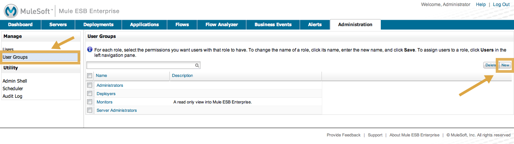
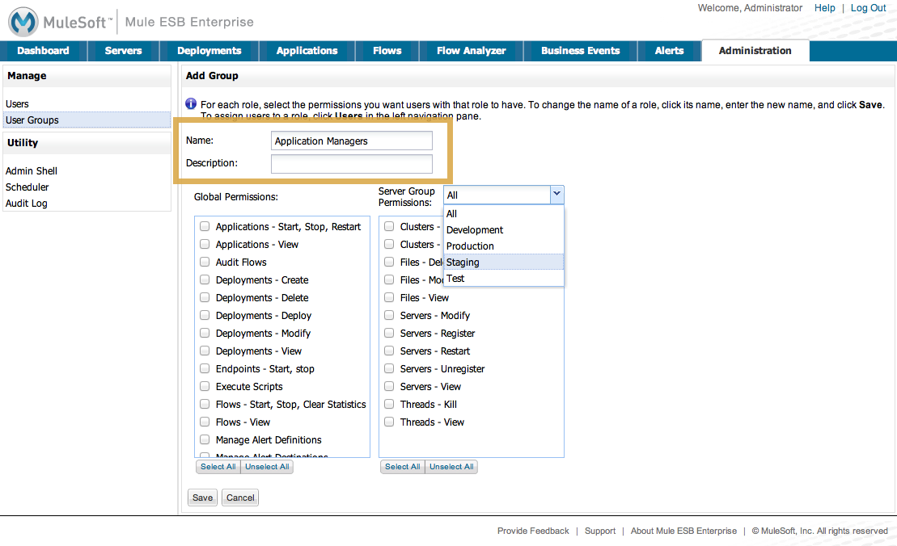
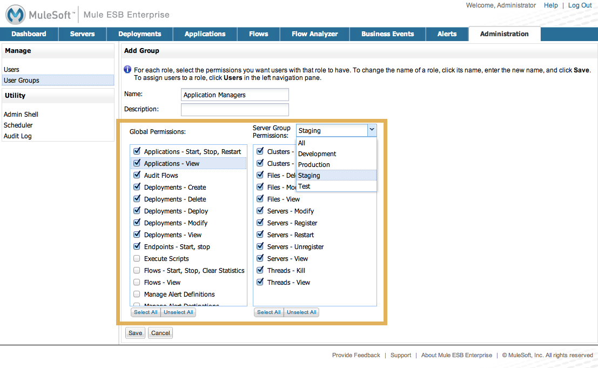

Managing MMC Users and Roles
This document introduces the two ways to manage users in MMC – via the console itself or via LDAP – and defines the concepts of users, groups, server group permissions, and global permissions, as these terms are used in MMC. This document also describes how to set up user groups and assign permissions in the MMC console, which you need to do regardless of whether you manage users via the console or via LDAP.
Definitions
Users are individuals who can log in to the console. For more information about adding and managing users, refer to Setting Up and Managing Users in MMC or Setting Up and Managing Users via LDAP.
User Groups allow you to assign permissions collectively to a group of users, effectively defining user roles. See Managing User Groups for more information.
Server Permissions specify which actions members of a user group may perform on a specified set of servers or server groups. These actions include viewing and deleting files, controlling servers, killing threads, and creating and disbanding clusters. For more information about server permissions, see Server Permissions Reference.
Global Permissions specify which tasks members of a user group may perform in the Management Console, such as viewing deployments, controlling flows, and managing users. For more information about global permissions, see [Global Permissions Reference ].
Choosing a User Management System
Mule Management Console offers two options for managing users, roles, and permissions:
-
You can set up and manage users via the Administration tab in the Management Console.
-
You can set up and manage users using LDAP.
Note that regardless of which method you choose for user management, you will need to use the Management Console to define user groups and assign permissions to them. Group permissions can be managed only via the console.
Ready to set up users?
-
Go to Setting Up and Managing Users in MMC for detailed instructions on how to set up and manage users via the Management Console Web application.
-
Go to Setting Up and Managing Users via LDAP for detailed instructions and technical prerequisites for using LDAP for your user management. Note that after enabling authentication through LDAP, the Users link is no longer available.
Once you have set up users, you can define User Groups, each with a set of appropriate permissions, and then add users to those groups.
Managing User Groups
This section describes how to add, manage, and delete a user group, also referred to as a role, in the management console. Note that you cannot delete the Administrators group. The other three groups (Monitors, Deployers, and Server Administrators) model typical roles for console users and have been set up for your convenience.
Adding a new user group, or editing an existing group, entails setting server group permissions and global permissions. Server group permissions define the server groups that the user role or group can manage. The default console server groups are listed, including All servers, plus any server groups you may have created. There is also a set of permissions that apply specifically to servers, including permissions for file access, thread management, and server management.
The global permissions define the permissions that this group has regarding deployment, applications, alerts, flows, and so forth. See Understanding Permissions for more information.
Adding a User Group
-
In the Administration tab, click User Groups in the left navigation panel to see the existing user groups. Click New to create a new group.
 -
Enter the Name of the new group, and optionally, a Description.
 -
Select the Global Permissions from the list in the left column. Use the Select All button at the bottom of the list to give this user group all global permissions. Or, check only those permissions you want the user group to have.
-
To set Server Group Permissions, first select one or more of the server groups from the pull-down list that this user group can act on. (You can select All, or select individual server groups one at a time and check the permissions boxes for each one.) Then, use the check boxes to set the server group permissions from the list in the right column. Use the Select All button at the bottom of the list to give this user group all server permissions for the designated server groups. Or, check only those permissions you want the user group to have.
 -
Click Save.
| Note that two cluster-related permissions are also listed in the server group permissions: Clusters - Create and Cluster - Disband. |
Managing Group Permissions
-
Click User Groups in the navigation tree to see the existing groups.
-
Click the particular user group that you want to edit.
-
Use the Edit Group screen to change the name, description, and modify the server and global permissions. Changing the server group access, server permissions, and global permissions is the same as for adding a new user group. (See the section above.)
-
Click Save to save any changes you make.
Understanding User Groups
Assigning individual users to user groups, equivalent to assigning them a role, is particularly important from a security perspective, since you are granting that user all the privileges and rights granted to the entire user group. Likewise, setting up the permissions for a user group is extremely important.
Whether you are modifying the permissions for the default user groups or setting up your own user groups, you need to consider the "actors" who will be in each user group and the use cases that these actors will be performing. In conjunction with these use cases, you can further fine-tune these permissions via server groups. By grouping servers into logical categories (Testing, Production, Development, Staging and so forth), you can give some groups more permissions for development and testing, but keep staging and production server environments more restrictive and thus more secure.
For example, you may want to define a user group for application developers. Application developers, of course, put together the application code itself, but they also need to test and debug the code before the application is ready for a production environment. To properly test an application, developers need to deploy their applications to a test system and potentially debug the message flows. Thus, you might want to give developers permissions for all tasks related to deployment, endpoint and flow control, and monitoring abilities on test- and development-specific servers.
You might want to use the staged server environment to set up and verify specific deployment scenarios prior to using them in a production environment. You might want to allow access to these servers for only certain deployment-related user groups. You might even decide that you need two levels of deployment specialists. At the same time, you may want to restrict developer access to the staged server environment so no unintended changes are made prior to release to a production environment.
You might also want a category of support technicians to have capabilities similar to developers, but on staging and production servers. You might have a support group handling sensitive accounts to which you give virtually all permissions.
You might have other user groups whose responsibilities rest more on system administration tasks. For these groups, you may want to give them permissions to manage other users, execute scripts, and manage alerts across all server groups.
Understanding Permissions
Permissions give specific user groups the ability to carry out certain sets of tasks. Tasks can be server-related, such as registering or unregistering a server, or they may pertain to applications, such as deployment and flow control functions, or specific users, and so forth. Since permissions granted (or not granted) represent the security on your system, you should be particularly careful when assigning permissions to new user groups or modifying the permissions of existing groups.
-
Global permissions give all users in a group the ability to perform certain tasks, ranging from viewing deployments, to controlling flows and managing users.
-
Server permissions range from viewing and deleting files, controlling servers, and killing threads. A user group’s server permissions may apply to all servers or to only a specified server group. The server permissions also apply to the following two activities:
-
creating a cluster
-
disbanding a cluster
-
The user groups provided by default (Administrators, Deployers, Monitors, and Server Administrators) have each been given a set of global permissions and server permissions. Both Administrators and Server Administrators by default have been given all global and server permissions; that is, they function as super users. It is important that these user groups retain these permissions to keep the servers fully functional. However, you should exercise care when assigning individual users to either of these groups, since each such user would immediately have these same permissions.
By default, the Administrators and Server Administrators groups also have Clusters - Create and Cluster - Disband permissions.
The two additional default user groups (Deployers and Monitors) have a very limited set of permissions. These two user groups have been included to illustrate the sort of granularity you might employ when assigning permissions to a group. For example, for Deployers, you might only want to grant them permissions related to deployments (create, delete, deploy, modify, and view deployments).
You can modify permissions for existing user groups, such as the user groups provided by default. You can also create new user groups and then assign global permissions to that group, plus specify whether that user group can act on all servers or just a particular server group.
Global Permissions Reference
Global permissions encompass the following areas and may be given as noted below to a user group:
-
Applications: A user group may be given the ability to only view applications and/or to control (start, stop, restart) applications
-
Audit flows: A user group can have the ability to audit flows via the Flow Analyzer tab
-
Audit flows - Admin functions: A user group can have the ability to stop any running flow analysis
-
Deployments: A user group may be given one or more deployment-related permissions: create, delete, deploy, modify, or view deployments
-
Endpoints: A user group may be given the ability to start and stop endpoints
-
Execute scripts: A user group may be given the ability execute scripts
-
Flows: A user group may be given the ability to only view flows and/or to control flows (start, stop, clear statistics)
-
Manage alert definitions: A user group may be given the ability to manage alert definitions
-
Manage alert destinations: A user group may be given the ability to manage alert destinations
-
Manage alert notifications: A user group may be given the ability to manage alert notifications
-
Manage server groups: A user group may be given the ability to manage server groups
-
Manage user groups: A user group may be given the ability to manage user groups
-
Manage users A user group may be given the ability to manage users
-
Pools A user group may be given the ability to modify pools
-
Repository items: A user group may be given the ability to delete, modify, and/or read a repository item
-
View activity: A user group may be given the ability to view activity
-
View alerts: A user group may be given the ability to view alerts
Server Permissions Reference
Server permissions include the following and apply to the specified server group or all servers:
-
Clusters: A user group may be given the ability to create or disband a cluster.
-
Files: A user group may be given the ability to manage delete, modify, and/or view files.
-
Servers: A user group may be given the ability to modify, register, restart, unregister, and/or view servers.
-
Threads: A user group may be given the ability to view and/or kill threads.
See Also
-
For information about setting up users, see Setting Up and Managing Users in MMC or Setting Up and Managing Users via LDAP.
-
See Automating Tasks Using Scripts for an explanation of the Utility options (Admin Shell and Scheduler).